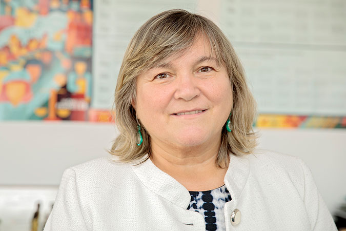

07.08.2019 - Lei Maria da Penha, 13 anos: direito de viver sem violência, artigo da diretora regional da ONU Mulheres para Américas e Caribe
Quando uma mulher é agredida, a sociedade é agredida. Esta é uma consciência em construção no mundo e mobiliza a energia de mulheres e homens há gerações, fazendo avançar leis, políticas, recursos e serviços especializados para o fim da violência contra as mulheres. No Brasil, há 13 anos a Lei Maria da Penha é amparo legal para salvar incontáveis vidas de mulheres no ambiente doméstico e familiar, embora milhares tenham sido vítimas fatais do machismo. Desde os anos 1980, o Brasil tem avançado na criação de mecanismos, normas e serviços especializados. Dessa forma, o Estado brasileiro cumpre seus compromissos internacionais com os direitos humanos das mulheres, como a Convenção Belém do Pará, que completa 25 anos em 2019. A Lei Maria da Penha é um exemplo disso e fruto do trabalho conjunto entre poder público e movimento de mulheres. Nesse período, debates sobre violência se popularizaram e temas foram revelados, tais como feminicídio, assédio sexual e violência contra as mulheres em espaços públicos. Vozes plurais das mulheres sobre dores e superações romperam silenciamentos. Transparência de dados, visibilidade de casos, campanhas e mobilizações on-line abriram os olhos de milhões de pessoas, despertando atenção aos primeiros sinais da violência. Contudo, é crescente o número de mulheres assassinadas. Segundo o Atlas da Violência de 2019, 4.963 brasileiras foram mortas em 2017: maior registro em dez anos. A taxa de assassinato de mulheres negras cresceu quase 30%, enquanto a de mulheres não negras subiu 4,5%. Entre 2012 e 2017, aumentou 28,7% o número de assassinatos de mulheres na própria residência por arma de fogo. Esta realidade é um novo chamado à ação para aprimorar a prevenção da violência contra as mulheres num horizonte de impedir agressões, torturas e feminicídios. A América Latina e o Caribe têm altos índices de violência e letalidade de mulheres e meninas. No Brasil, ocorrem quase metade das mortes na região. Resolver este problema é agir para a implementação adequada da Lei Maria da Penha por meio de políticas públicas que contemplem a diversidade das mulheres, orçamento à altura, mecanismos de gestão e monitoramento eficazes, dados estatísticos confiáveis, recursos humanos especializados capacitados e serviços de apoio às mulheres em plena operação até os rincões. A conta é simples: se a violência aumenta, mais investimentos são necessários para a proteção social, tais como prevenção, acolhimento, justiça e reparação, conforme as recomendações da 63ª Comissão da ONU sobre a Situação das Mulheres, ocorrida neste ano. Um ponto de partida é avaliar como as mulheres da periferia, rurais e comunidades tradicionais acessam a Lei Maria da Penha. É preciso saber quais são e como agem os elementos que fazem com que a violência ocorra mais cedo e perdure nos relacionamentos. É conhecer as vulnerabilidades das mulheres negras, indígenas, jovens, idosas, deficientes, lésbicas, bissexuais, trans, entre outras, e as ameaças concretas à condição e à liberdade delas como sujeitas de direitos. Estes 13 anos oportunizam análises maduras. Desde o início, a Lei Maria da Penha estimula novos modos de agir do poder público, respostas integradas, continuidade de investimentos e diálogo com a qualificada colaboração dos movimentos de mulheres ao tema, acumulada há mais de 40 anos. Viver sem violência é direito de mulheres e meninas. É base para o desenvolvimento e a sustentabilidade. É ação para o presente e o futuro de igualdade em que as mulheres e meninas acessem seus direitos sem que nenhuma delas fique para trás. Maria-Noel Vaeza Diretora regional da ONU Mulheres para Américas e Caribe